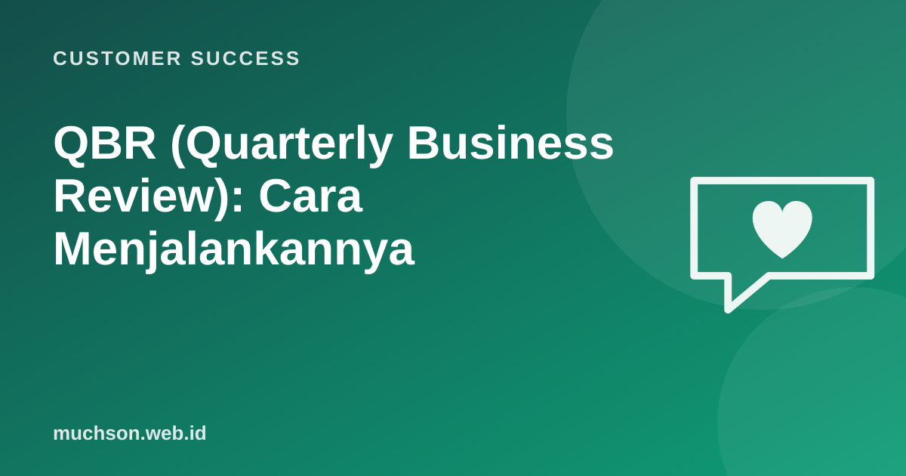

Beranda › Artikel › Customer Success
Customer SuccessQBR (Quarterly Business Review): Cara Menjalankannya
QBR yang buruk adalah demo fitur 60 menit yang membuat eksekutif pelanggan memeriksa ponsel. QBR yang baik adalah percakapan bisnis: apa yang sudah dicapai bersama, apa yang menghambat, dan apa rencana kuartal depan. Pelanggan meninggalkan rapat dengan bukti nilai yang bisa mereka bawa ke atasan mereka.

Tujuan QBR
- Menunjukkan nilai yang sudah dicapai dengan data, terkait tujuan bisnis pelanggan.
- Menyelaraskan prioritas kuartal berikutnya.
- Membangun hubungan dengan pengambil keputusan, bukan hanya pengguna harian.
- Menangkap risiko sebelum menjadi masalah perpanjangan.
Siapa yang diundang
| Pihak pelanggan | Pihak Anda |
|---|---|
| Sponsor eksekutif (pengambil keputusan) | CSM (pemimpin rapat) |
| Champion / pengguna utama | Manajer CS atau eksekutif bila akun strategis |
| Admin teknis (bila perlu) | Ahli produk untuk topik tertentu |
Agenda 45 menit
Data yang ditampilkan
Tidak ada kejutan
Kirim draf data ke champion beberapa hari sebelum QBR. Champion tidak suka terkejut di depan atasannya, dan mereka bisa membantu menambahkan konteks.
Kesalahan umum
Tanya jawab
Apakah semua pelanggan perlu QBR?
Tidak. QBR penuh untuk akun bernilai tinggi atau strategis. Akun kecil cukup ringkasan kuartalan otomatis lewat email atau webinar kelompok.
Bagaimana bila tidak ada hasil bagus untuk ditampilkan?
Akui dengan jujur, jelaskan penyebab, dan bawa rencana perbaikan konkret. Menyembunyikan masalah jauh lebih merusak kepercayaan.
Apakah harus tiap kuartal?
Sesuaikan dengan siklus bisnis pelanggan. Beberapa memilih tinjauan setengah tahunan atau sebelum periode perencanaan anggaran mereka.
Sumber dan bacaan lanjut
- Amy Gallo (2014): The Value of Keeping the Right Customers, Harvard Business Review
- Onboarding pelanggan B2B (artikel terkait)
- AI untuk presentasi (artikel terkait)
- Net revenue retention dan ekspansi (artikel terkait)